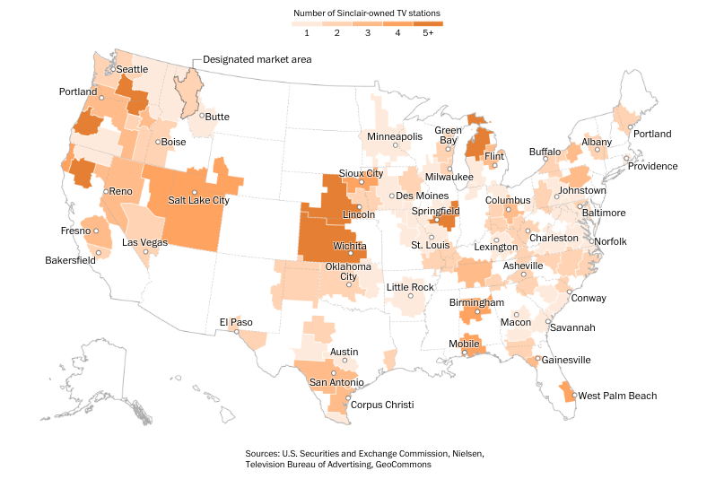
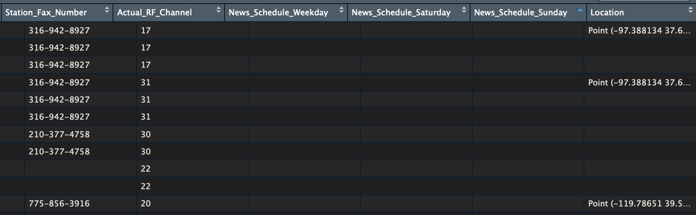
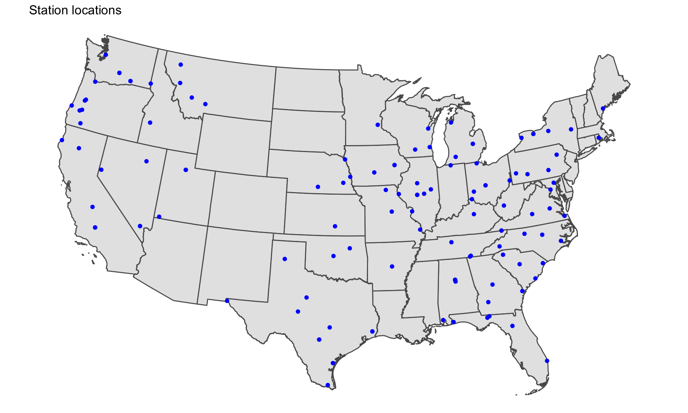
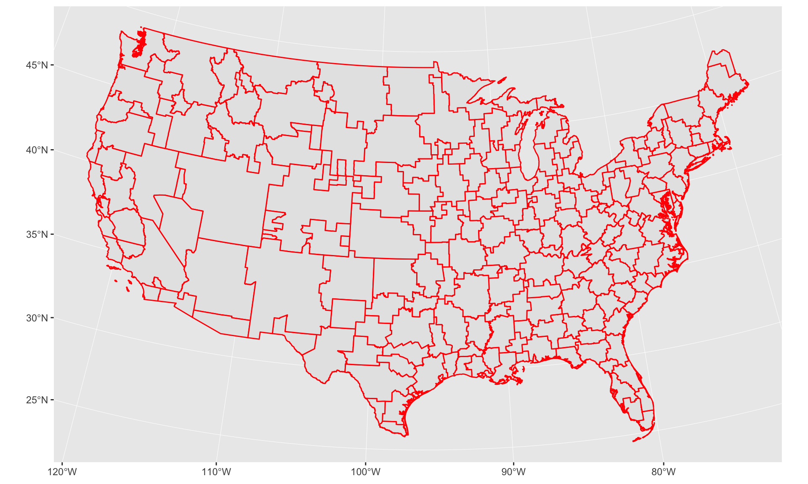
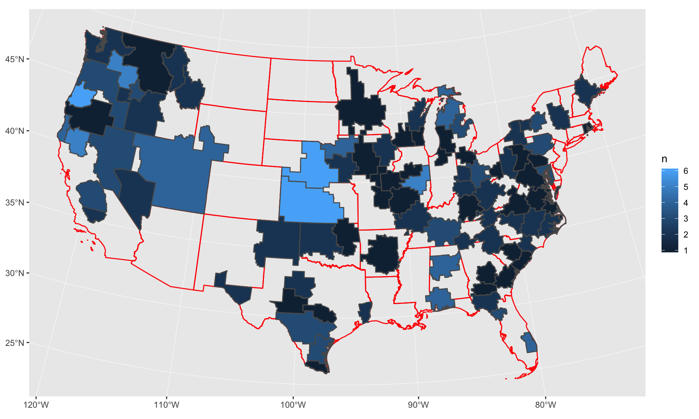
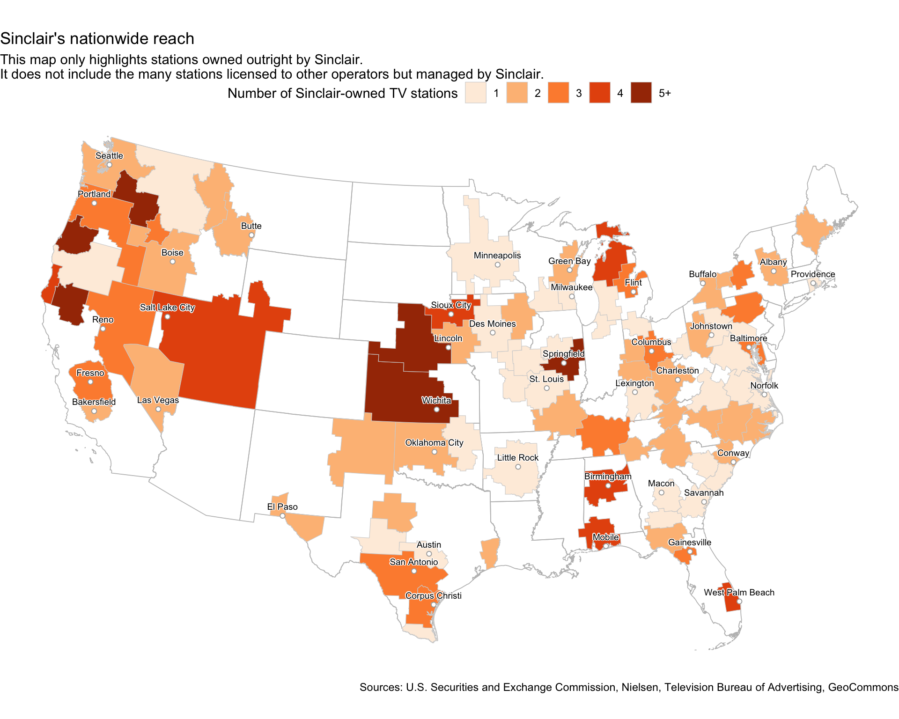
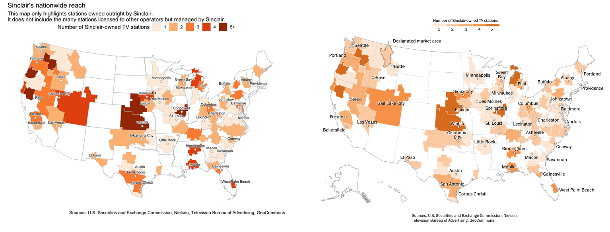

We’re going to recreate the graphic from The Washington Post [story about Sinclair Broadcasting]((https://www.washingtonpost.com/graphics/2018/lifestyle/sinclair-broadcasting/):

Graphics editor Chris Alcantara used a mix of R, Excel, QGIS, and Illustrator to create this map.
We’re going to try to stick to R exclusively with the help of some packages like
There’s a map on Sinclair’s website showing off all their stations.
Grab the json URL that’s running the map.
We’ll use the jsonlite package
library(tidyverse)
library(stringr)
library(jsonlite)
json_url <-"http://sbgi.net/resources/assets/sbgi/MetaverseStationData.json"
# json_url <- "data/MetaverseStationData.json"
stations <- fromJSON(json_url)
Let’s focus on Primary stations and extract the latitude and longitude data
primary_stations <- stations %>%
filter(Channel=="Primary") %>%
mutate(
Location=str_replace(Location, "Point \\(", ""),
lon=str_replace(Location, " .*", ""),
lat=str_replace(Location, ".* ", ""),
lat=str_replace(lat, "\\)", ""))glimpse(primary_stations)## Observations: 192
## Variables: 28
## $ Call_Letter <chr> "KAAS", "KAAS-LD", "KABB", "KAEF", "KAME"…
## $ Logo_List <chr> "", "", "kabb_fox.jpg", "/resources/asset…
## $ Logo_Map <chr> "", "", "kabb_fox_map.jpg", "/resources/a…
## $ Web_1st_URL <chr> "http://www.foxkansas.com", "http://www.f…
## $ Web_Address <chr> "http://www.foxkansas.com", "http://www.f…
## $ Station <chr> "KAAS", "KAAS-LD", "KABB", "KAEF", "KAME"…
## $ Channel <chr> "Primary", "Primary", "Primary", "Primary…
## $ Affiliation <chr> "FOX", "FOX", "FOX", "ABC", "Nevada Sport…
## $ DMA <chr> "Wichita - Hutchinson, KS", "Wichita - Hu…
## $ DMA_Code <chr> "678", "678", "641", "802", "811", "820",…
## $ DMA_Short <chr> "Wichita_KS", "Wichita_KS", "San Antonio_…
## $ DMA_Rank <int> 76, 76, 31, 195, 109, 22, 57, 122, 122, 1…
## $ Station_Status <chr> "O&O", "O&O", "O&O", "O&O", "JSA", "O&O",…
## $ Station_Address <chr> "316 North West Street, Wichita, KS 67203…
## $ Station_City <chr> "Wichita", "Wichita", "San Antonio", "Eur…
## $ Station_State <chr> "KS", "KS", "TX", "CA", "NV", "OR", "AR",…
## $ Station_Zip <int> 67203, 67203, 78229, 95501, 89502, 97232,…
## $ Station_Logo <chr> "sbg_noimage", "sbg_noimage", "kabb_fox",…
## $ Station_URL <chr> "http://www.foxkansas.com, http://www.fox…
## $ Station_Phone_Number <chr> "316-942-2424", "316-942-2424", "210-366-…
## $ Station_Fax_Number <chr> "316-942-8927", "316-942-8927", "210-377-…
## $ Actual_RF_Channel <chr> "17", "31", "30", "22", "20", "43", "22",…
## $ News_Schedule_Weekday <chr> "", "", "0500-0900, 1100-1200, 2100-2200"…
## $ News_Schedule_Saturday <chr> "", "", "2100-2200", "", "", "0700-0900,1…
## $ News_Schedule_Sunday <chr> "", "", "2100-2200", "", "", "0700-0900,0…
## $ Location <chr> "-97.388134 37.68888)", "-97.388134 37.68…
## $ lon <chr> "-97.388134", "-97.388134", "-98.569649",…
## $ lat <chr> "37.68888", "37.68888", "29.490196", "40.…There are two data points that we can extract from this data set:
We can map out the station locations quickly using the sf package to visualize latitude and longitude of each one on top of a map of the country downloaded using the tigris package.
station_latlon <-
select(primary_stations, DMA_Short, Location, lon, lat) %>%
unique() %>%
mutate(lon=as.numeric(lon)) %>%
mutate(lat=as.numeric(lat)) %>%
filter(!is.na(lon))
glimpse(station_latlon)## Observations: 121
## Variables: 4
## $ DMA_Short <chr> "Wichita_KS", "San Antonio_TX", "Eureka_CA", "Reno_NV"…
## $ Location <chr> "-97.388134 37.68888)", "-98.569649 29.490196)", "-124…
## $ lon <dbl> -97.38813, -98.56965, -124.16704, -119.78651, -122.643…
## $ lat <dbl> 37.68888, 29.49020, 40.80141, 39.51247, 45.52701, 34.7…library(sf)
library(tigris)
options(tigris_class = "sf")
states <- states(cb=T)
# states <- readRDS("backup_data/stats.rds")
glimpse(states)Filter out some territories and states from the data and set the Projection
states <- filter(states, !STUSPS %in% c("AK", "AS", "MP", "PR", "VI", "HI", "GU"))
# Converting the projection to Albers
states <- st_transform(states, 5070)
# Changing the projection of station_latlon so it matches the states sf dataframe map
station_latlon_projected <- station_latlon %>%
filter(!is.na(lon)) %>%
st_as_sf(coords=c("lon", "lat"), crs = "+proj=longlat") %>%
st_transform(crs=st_crs(states)) %>%
st_coordinates(geometry)
station_latlon <- cbind(station_latlon, station_latlon_projected)ggplot(states) +
geom_sf() +
geom_point(data=station_latlon, aes(x=X, y=Y), color="blue") +
theme_void() +
theme(panel.grid.major=element_line(colour="transparent")) +
labs(title="Station locations")We’ve added a new map layer on top of the states boundaries map with the function: geom_point()

# Fixing a bad data point
primary_stations$DMA_Code <- ifelse(primary_stations$DMA_Short=="Lincoln_NE", 722, primary_stations$DMA_Code)
## Summarizing by DMA
dma_totals <- primary_stations %>%
group_by(DMA, DMA_Code) %>%
count() %>%
arrange(desc(n)) %>%
ungroup() %>%
rename(dma_code=DMA_Code) %>%
mutate(dma_code=as.numeric(dma_code))
head(dma_totals)## # A tibble: 6 x 3
## DMA dma_code n
## <chr> <dbl> <int>
## 1 Eugene, OR 801 6
## 2 Lincoln - Hastings - Kearney, NE 722 6
## 3 Wichita - Hutchinson, KS 678 6
## 4 Champaign - Springfield - Decatur, IL 648 5
## 5 Chico-Redding 868 5
## 6 Yakima - Pasco - Richland - Kennewick, WA 810 5Check around on the internet and you’ll find sources for the DMA shapefile.
Here’s one from Harvard’s Dataverse.
I’ve already downloaded it to our project folder.
We’ll read it in using the st_read() function from the sf package.
geo <- st_read("data/dma_2008/DMAs.shp")
# It doesn't have a CRS so we'll assign it one
st_crs(geo) <- 4326
# Converting the projection so it's Albers
geo <- st_transform(geo, 5070)
ggplot(geo) +
geom_sf(color="red") +
coord_sf()geo <- st_read("data/dma_2008/DMAs.shp")
# It doesn't have a CRS so we'll assign it one
st_crs(geo) <- 4326
# Converting the projection so it's Albers
geo <- st_transform(geo, 5070)
ggplot(geo) +
geom_sf(color="red") +
coord_sf()
Join the DMA station count to it so we can visualize it.
# Prepping a column name to join on
geo <- geo %>%
mutate(dma_code=as.numeric(as.character(DMA)))
geo <- left_join(geo, dma_totals, by="dma_code") %>%
filter(!is.na(n))
ggplot() +
geom_sf(data=states, color="red", fill=NA) +
geom_sf(data=geo, aes(fill=n)) +
coord_sf()
# Filtering out locations based on map
cities <- c("Portland", "Seattle", "Butte", "Boise", "Reno", "Fresno", "Bakersfield",
"Reno", "Salt Lake City", "Las Vegas", "El Paso", "Austin", "San Antonio",
"Corpus Christi", "Oklahoma City", "Wichita", "Lincoln", "Sioux City",
"Minneapolis", "Green Bay", "Milwaukee", "Des Moines", "Springfield",
"St. Louis", "Little Rock", "Flint", "Columbus", "Lexington", "Birmingham",
"Mobile", "Macon", "Asheville", "Charleston", "Buffalo", "Johnstown", "Baltimore",
"Norfolk", "Conway", "Savannah", "Gainesville", "West Palm Beach", "Albany",
"Providence", "Portland")
station_latlon_filtered <- station_latlon %>%
mutate(DMA_Short= gsub("_.*", "", DMA_Short)) %>%
mutate(DMA_Short= gsub("Bozeman", "Butte", DMA_Short)) %>%
mutate(DMA_Short= gsub("Champaign", "Springfield", DMA_Short)) %>%
mutate(DMA_Short= gsub("Myrtle Beach", "Conway", DMA_Short)) %>%
mutate(DMA_Short= gsub("West Palm", "West Palm Beach", DMA_Short)) %>%
filter(DMA_Short %in% cities) %>%
group_by(DMA_Short) %>%
filter(row_number()==1)glimpse(station_latlon_filtered)## Observations: 41
## Variables: 6
## Groups: DMA_Short [41]
## $ DMA_Short <chr> "Wichita", "San Antonio", "Reno", "Portland", "Little …
## $ Location <chr> "-97.388134 37.68888)", "-98.569649 29.490196)", "-119…
## $ lon <dbl> -97.38813, -98.56965, -119.78651, -122.64375, -92.2710…
## $ lat <dbl> 37.68888, 29.49020, 39.51247, 45.52701, 34.74508, 35.3…
## $ X <dbl> -121246.74, -249168.34, -2005457.33, -2054419.36, 3385…
## $ Y <dbl> 1628840.1, 716202.8, 2084644.2, 2794219.9, 1304925.7, …geo <- geo %>%
mutate(bin=case_when(
n == 1 ~ "1",
n == 2 ~ "2",
n == 3 ~ "3",
n == 4 ~ "4",
n >= 5 ~ "5+"
))
library(ggrepel)
library(shadowtext)We’re layering our different shape files:
And we’re adding a bunch of functions in there for styling, like scale_fill_brewer() and geom_shadowtext() and geom_text_repel() and various theme options.
ggplot() +
geom_sf(data=states, color="gray", fill=NA, size=.3) +
geom_sf(data=geo, aes(fill=bin), color="light gray", size=.2) +
scale_fill_brewer(palette = "Oranges", name="Number of Sinclair-owned TV stations") +
geom_point(data=station_latlon_filtered, aes(x=X, y=Y),
color="dark gray", fill="white", shape=21) +
geom_shadowtext(data=station_latlon_filtered, aes(x=X, y=Y, label=DMA_Short),
color="black", bg.color="white", vjust=-1, size=2.5) +
geom_text_repel() +
coord_sf() +
theme_void() +
theme(panel.grid.major = element_line(colour = 'transparent'),
legend.position="top", legend.direction="horizontal") +
labs(title="Sinclair's nationwide reach",
subtitle="This map only highlights stations owned outright by Sinclair.
It does not include the many stations licensed to other operators but managed by Sinclair.",
caption="Sources: U.S. Securities and Exchange Commission, Nielsen, Television Bureau of Advertising, GeoCommons")
ggsave("sinclair_ggplot.png", width=10, height=6, units="in")
